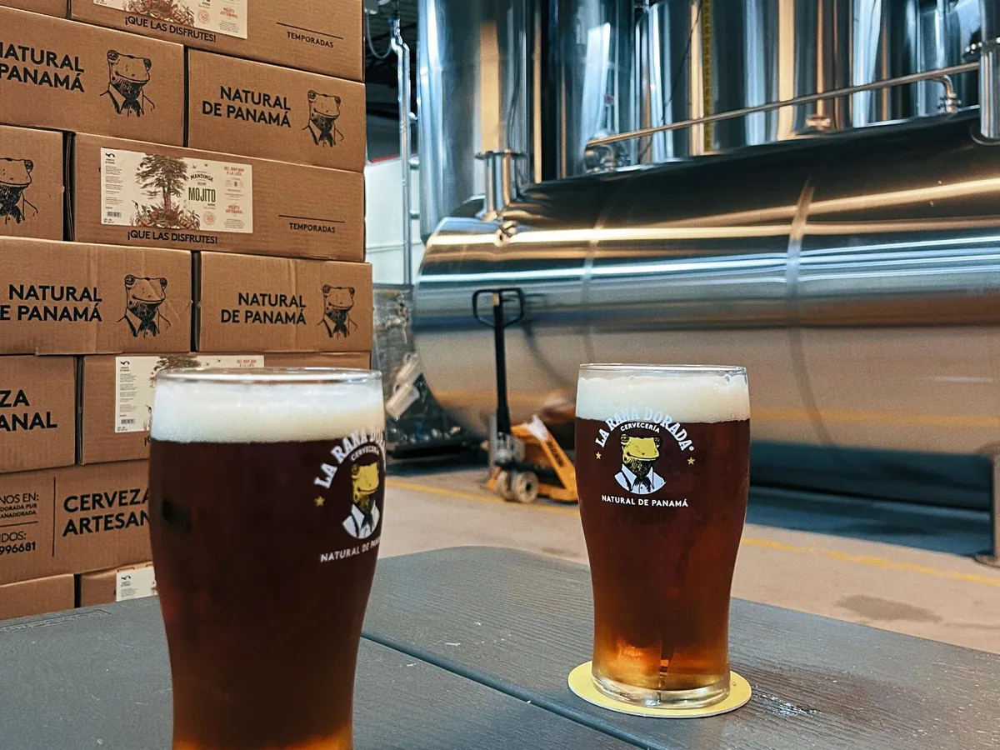
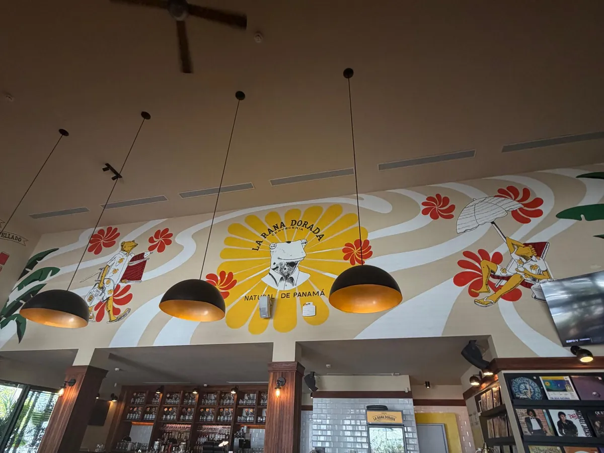

Una pinta de cerveza artesanal en Panamá cuesta bastante más que una cerveza nacional. Aun así, hay un lugar al que la gente vuelve cada semana, con amigos, con el perro, después del trabajo: La Rana Dorada.
Es fácil decir que "tienen buena cerveza". Es cierto, y hay medallas para probarlo. Pero la buena cerveza no explica por sí sola 16 años de crecimiento, 11 locales en Ciudad de Panamá, franquicias en el interior y un bar en Bogotá. Lo que lo explica es un sistema: un modelo de negocio bien elegido, una marca con un símbolo poderoso y una experiencia que convierte una cerveza en un plan.
La pregunta de este manifiesto no es si la cerveza es buena. Es cómo se construye una marca que hace que el precio deje de ser el centro de la decisión.
No empezó de cero: un modelo probado, traído a Panamá
La Rana Dorada abrió en 2010, apenas 5 años después de Istmo Brew Pub, el primer brewpub del país. Detrás estaban Berny Silberwasser, fundador de Bogotá Beer Company (BBC), la cervecería artesanal más grande de Colombia, y su amigo de infancia Jacky Yaffe, mitad colombiano y mitad panameño.
Ese detalle importa más de lo que parece. La Rana Dorada no fue un experimento de alguien que aprendía el negocio sobre la marcha. Fue la réplica de un modelo que ya había funcionado en otro mercado, adaptada a un país donde la categoría prácticamente no existía. Según contaron sus fundadores, el nombre salió caminando por una tienda de souvenirs en Panamá.
El primer pub abrió en Vía Argentina, frente a la escultura de la Cabeza de Einstein. El segundo, en Casco Antiguo, con los tanques de producción a la vista del cliente.
De pub de barrio a marca regional en 16 años
Su crecimiento se puede leer en 5 etapas. Cada una resolvió un problema distinto del negocio.
Primer pub en Vía Argentina y luego Casco Antiguo. En la práctica, competían contra la cerveza industrial, no contra otras artesanales.
En el primer Micro Brew Fest solo había 2 microcervecerías en el país: La Rana Dorada e Istmo Brew Pub. Ese año nació Casa Bruja con un modelo distinto, enfocado en fábrica y embotellado.
Llegaron a 7 pubs en la capital con 27 recetas propias, y después a 10 locales entre Ciudad de Panamá, San Miguelito y La Chorrera. Fueron los primeros en embotellar en Panamá y luego pasaron a la lata.
En 2022 sumaron 6 medallas internacionales, entre ellas oro en el World Beer Awards de Londres con su Brut IPA. En 2024 fueron reconocidos como la mejor cerveza de América en la Copa de Cervezas de América.
Más de 600,000 litros producidos al año, 11 locales en Ciudad de Panamá y franquicias en Chiriquí y Panamá Oeste. En febrero de 2026 abrieron su primer bar fuera del país, en Usaquén (Bogotá), con producción local junto al grupo Alta Fermentación. Ecuador es el siguiente mercado en evaluación.
No venden la botella: venden la mesa

La fábrica, las cajas de temporada y la pinta en la mesa: toda la cadena en manos de la misma marca.
La decisión más importante de La Rana Dorada no fue de marketing. Fue elegir el modelo de brewpub: varios locales propios, acogedores, donde la cerveza se produce y se sirve bajo la misma marca. Eso cambia la economía del negocio.
Se quedan con el margen completo
Una cervecería que vende a través de terceros reparte su margen con distribuidores, supermercados y bares. En un brewpub, el margen de la fábrica, el de la distribución y el del bar se quedan en la misma cuenta.
La cerveza sube el ticket
Nadie va solo por una pinta. La comida es casi un segundo producto estrella: en las reseñas de clientes, la pizza de la casa aparece una y otra vez, y el gasto promedio en comida ronda los $23 por persona antes del alcohol. La marca cuida esto en serio: en Bogotá, un pizzero italiano visitará el bar 1 semana al año para asesorar recetas y procesos.
El canal es la experiencia
Controlar el lugar significa controlar cómo se sirve la cerveza, cómo se explica, qué música suena y cómo se trata al cliente. La marca no queda en manos de un tercero. Desde ahí construyeron el resto: latas, alquiler de barriles para eventos, franquicias y venta en otros bares.
El precio de lista es un ancla, no el precio que todos pagan
Una aclaración: no hay datos públicos que confirmen que La Rana Dorada sea la cerveza artesanal más cara de Panamá. Lo que sí está documentado es que su precio de lista se percibe alto. Algunos clientes lo dicen sin rodeos en las reseñas, y lo resuelven igual: van en happy hour.
Su happy hour va de mediodía a las 6:00 p.m., con precio rebajado en las cervezas de la casa. Son 6 horas diarias que cumplen 3 funciones:
- Llenan horas muertas. Un bar a las 3:00 p.m. suele estar vacío. Con precio rebajado, ese espacio se convierte en reuniones de trabajo y salidas después de la oficina.
- Crean hábito. El cliente que vuelve cada semana a precio reducido convierte a La Rana en "su" lugar.
- Protegen el precio completo. De noche y el fin de semana, el cliente que ya es fiel paga el precio de lista sin compararlo.
Una marca no sostiene un precio alto pidiéndole a todos que lo paguen. Lo sostiene dándole a cada cliente una forma de entrar y una razón para quedarse.
A eso se suma la degustación gratuita de las cervezas de la casa que ofrecen al llegar. El cliente nuevo prueba antes de pedir, y el riesgo de la primera compra desaparece.
Un símbolo nacional, una causa real y un verbo propio

"Natural de Panamá": la identidad llevada al espacio, con flores, playa y la rana como personaje.
La rana dorada es un anfibio endémico de Panamá, en estado crítico de extinción según la UICN y con un día nacional propio, el 14 de agosto. Elegirla como nombre le dio a la marca un símbolo que cualquier panameño reconoce, sin tener que explicar nada.
Lo que convierte ese símbolo en algo creíble es que viene con acción: parte de las ganancias se destina a una fundación que trabaja en la conservación de la especie. Sin eso, el nombre sería decoración. Con eso, el cliente siente que paga algo más que una cerveza.
La identidad visual hace el resto. Una rana con camisa, dibujada a mano, con estrellas y el lema "Natural de Panamá". Es cercana, con humor y fácil de convertir en murales, vasos y personajes. Hasta el lenguaje se volvió suyo: "ranear" entró en el vocabulario de quienes la frecuentan.
El recorrido completo de un cliente sano
En Brand to Revenue analizamos cualquier marca a través del recorrido que hace un cliente sano: me ve, me entiende, me compra y me vuelve a elegir. La Rana Dorada resuelve los 4 pasos.
| Paso del cliente | Qué hizo La Rana Dorada | Qué mueve en el negocio |
|---|---|---|
| Me ve | Llegó primero a la categoría, con un símbolo nacional y un nombre fácil de recordar. | Menor costo para ganar atención |
| Me entiende | Medallas internacionales, fábrica a la vista, cervecero con nombre propio y una causa de conservación. | Más confianza antes de la primera compra |
| Me compra | Degustación gratuita, happy hour de 6 horas y locales cerca de donde vive y trabaja su cliente. | Menos fricción y menor CAC |
| Me vuelve a elegir | Cervezas de temporada, comida que justifica quedarse y el bar de siempre del barrio. | Más visitas por cliente y mayor LTV |
El recorrido es circular. Cada cliente que vuelve trae amigos, y cada grupo nuevo empieza otra vez desde "me ve". Así es como el marketing se vuelve un activo que se acumula.
Los riesgos de una marca premium
- El servicio no es igual en todas partes. Las reseñas muestran experiencias muy distintas entre sucursales y hasta dentro del mismo local. Cuando cobras más, una mala atención rompe el sentido del precio de inmediato.
- La competencia creció. Se calculan unas 35 cervecerías en el mercado. Ser los primeros ya no alcanza para diferenciarse.
- El peso del happy hour. Si la mayor parte del volumen se vende con descuento, el precio premium es más percepción que margen. Es un dato que solo la empresa conoce.
- El símbolo no viaja solo. En Bogotá, "Natural de Panamá" pierde el peso emocional que tiene en casa. Ahí la marca tiene que ganar por calidad y estilo, y la propia empresa ya se proyecta como una marca latinoamericana más que panameña.
5 lecciones para cualquier marca que quiera cobrar más
Vende el ritual, no el producto
Si solo vendes el producto, el cliente lo compara con todo lo demás. Si vendes un plan completo, la comparación se vuelve difícil.
Separa el precio que anuncias del que se paga
Un ancla alta más una puerta de entrada clara da percepción premium y volumen a la vez.
Un símbolo necesita una causa real
El nombre atrae. La acción detrás del nombre es lo que construye confianza.
El margen está en controlar el canal
Cada intermediario entre tu producto y tu cliente se lleva una parte del margen y una parte de la experiencia.
La operación es la marca
Una mala experiencia en la mesa puede borrar años de medallas. La marca se construye en cada servicio, no solo en la comunicación.
La Rana Dorada en datos
¿Quién fundó La Rana Dorada y cuándo?
La fundaron en 2010 Berny Silberwasser, fundador de Bogotá Beer Company, y su amigo de infancia Jacky Yaffe. El primer pub abrió en Vía Argentina, en Ciudad de Panamá.
¿Cuántos locales tiene La Rana Dorada?
A 2025 reportaba 11 locales en Ciudad de Panamá y franquicias en Chiriquí y Panamá Oeste. En febrero de 2026 abrió su primer bar en Bogotá, Colombia.
¿Cuánta cerveza produce La Rana Dorada?
Su planta en Panamá superó los 600,000 litros de producción anual en 2025.
¿Qué premios ha ganado La Rana Dorada?
Entre otros, oro en el World Beer Awards de Londres en 2022 con su Brut IPA, y el reconocimiento como mejor cerveza de América en la Copa de Cervezas de América de 2024.
Análisis independiente de Brand to Revenue, sin relación comercial con La Rana Dorada. Las marcas mencionadas pertenecen a sus dueños. Datos tomados de fuentes públicas: Portafolio · Valora Analitik · Revista E&N · PanAmerican World · Good Beer Hunting · VinePair · Panamá América · Revista Panorama · TVN · reseñas públicas en Degusta Panamá y Wanderlog.